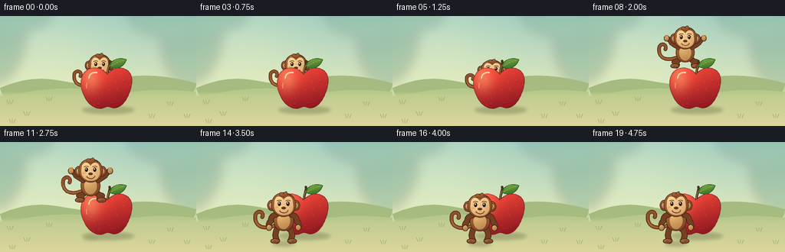
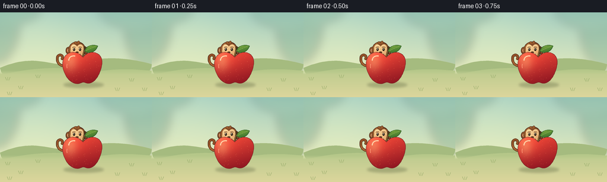

CODING AGENTS AS PIXEL WORLD MODELS
traex/GPT-6.1-Sol · dynamic_spatial_relationship_0054
点击播放 · 原生 RGB 像素
逐轮保存的候选
回放视频、检查图与代码变化。
每份候选均可单独播放。实际图片检查记录在下方工具轨迹中。
候选 01播放与检查图
点击播放 · 原生 RGB 像素


展开代码变化
--- 上一保存版本
+++ 本次保存版本
@@ -0,0 +1,235 @@
+from pathlib import Path
+import json, math
+import numpy as np
+from PIL import Image, ImageDraw, ImageFilter
+import artifact_io
+
+ROOT=Path(__file__).resolve().parent
+SPEC=json.loads((ROOT/'task_spec.json').read_text())
+W,H=SPEC['width'],SPEC['height']
+S=4
+rng=np.random.default_rng(12)
+
+def bez(points, steps=24):
+ p=np.array(points,float)
+ t=np.linspace(0,1,steps)[:,None]
+ if len(p)==4:
+ a=(1-t)**3*p[0]+3*(1-t)**2*t*p[1]+3*(1-t)*t*t*p[2]+t**3*p[3]
+ else:
+ a=(1-t)**2*p[0]+2*(1-t)*t*p[1]+t*t*p[2]
+ return [tuple(v) for v in a]
+
+def path(start, curves):
+ p=[start]
+ for c in curves:
+ p+=bez([p[-1],*c])[1:]
+ return p
+
+def ellipse(cx,cy,rx,ry,n=90):
+ return [(cx+rx*math.cos(t),cy+ry*math.sin(t)) for t in np.linspace(0,2*math.pi,n)]
+
+def solid(im,pts,col,outline=None,width=.7):
+ d=ImageDraw.Draw(im)
+ pp=[(round(x*S),round(y*S)) for x,y in pts]
+ d.polygon(pp,fill=col)
+ if outline: d.line(pp+[pp[0]],fill=outline,width=max(1,round(width*S)),joint='curve')
+
+def line(im,pts,col,width):
+ d=ImageDraw.Draw(im)
+ p=[(round(x*S),round(y*S)) for x,y in pts]
+ w=max(1,round(width*S))
+ d.line(p,fill=col,width=w,joint='curve')
+ for x,y in [p[0],p[-1]]:
+ r=w/2
+ d.ellipse((x-r,y-r,x+r,y+r),fill=col)
+
+def shaded(im,pts,base,light,outline=None,width=.65):
+ a=np.array(pts)
+ x0=max(0,int(np.floor(a[:,0].min()*S))-3); y0=max(0,int(np.floor(a[:,1].min()*S))-3)
+ x1=min(W*S,int(np.ceil(a[:,0].max()*S))+4); y1=min(H*S,int(np.ceil(a[:,1].max()*S))+4)
+ if x1<=x0 or y1<=y0:return
+ m=Image.new('L',(x1-x0,y1-y0));d=ImageDraw.Draw(m)
+ pp=[(x*S-x0,y*S-y0) for x,y in pts];d.polygon(pp,fill=255)
+ yy,xx=np.mgrid[0:y1-y0,0:x1-x0].astype(float)
+ u=xx/max(1,x1-x0);v=yy/max(1,y1-y0)
+ f=np.clip(.75*(1-v)+.22*(1-u)+.17*np.exp(-((u-.3)**2+(v-.25)**2)*10),0,1)[...,None]
+ arr=np.array(base)*(1-f)+np.array(light)*f
+ layer=Image.fromarray(np.uint8(arr.clip(0,255)))
+ im.paste(layer,(x0,y0),m)
+ if outline:
+ ImageDraw.Draw(im).line([(x*S,y*S) for x,y in pts]+[(pts[0][0]*S,pts[0][1]*S)],fill=outline,width=max(1,round(width*S)),joint='curve')
+
+def shadow(im,x,y,rx,ry,opacity=65):
+ sh=Image.new('RGBA',im.size)
+ ImageDraw.Draw(sh).ellipse(((x-rx)*S,(y-ry)*S,(x+rx)*S,(y+ry)*S),fill=(45,57,27,opacity))
+ sh=sh.filter(ImageFilter.GaussianBlur(2.0*S))
+ im.paste(sh,(0,0),sh)
+
+# Quiet, softly defocused orchard: the action stays visually dominant.
+yy,xx=np.mgrid[0:H*S,0:W*S].astype(float)
+y=yy/S; x=xx/S
+sky_top=np.array([163,205,192]);sky_bottom=np.array([233,237,190])
+f=np.clip(y/113,0,1)[...,None]
+bgarr=sky_top*(1-f)+sky_bottom*f
+sun=np.exp(-((x-58)**2/(84**2)+(y-30)**2/(70**2)))[...,None]
+bgarr=np.clip(bgarr+sun*np.array([16,10,3]),0,255)
+BG=Image.fromarray(bgarr.astype('uint8'))
+fol=Image.new('RGBA',BG.size)
+d=ImageDraw.Draw(fol)
+for cx,cy,rx,ry,c in [(-12,20,43,69,(68,126,107,68)),(15,-17,59,37,(72,135,107,52)),(257,28,45,71,(68,129,103,62)),(225,-12,60,39,(88,146,114,45))]:
+ d.ellipse(((cx-rx)*S,(cy-ry)*S,(cx+rx)*S,(cy+ry)*S),fill=c)
+fol=fol.filter(ImageFilter.GaussianBlur(8*S));BG.paste(fol,(0,0),fol)
+# Soft low hills.
+solid(BG,path((0,94),[[(55,71),(76,88),(115,89)],[(167,72),(220,77),(256,88)],[(256,144),(0,144),(0,94)]]),(165,187,127))
+solid(BG,path((0,106),[[(77,89),(112,94),(160,101)],[(200,94),(234,97),(256,99)],[(256,144),(0,144),(0,106)]]),(181,199,137))
+# Smooth, warm meadow floor.
+ground=Image.new('RGBA',BG.size)
+ga=np.zeros((H*S,W*S,4),dtype=np.uint8)
+f=np.clip((y-98)/46,0,1)[...,None]
+gc=np.array([188,203,143])*(1-f)+np.array([220,214,156])*f
+ga[:,:,:3]=gc.astype('uint8');ga[:,:,3]=np.uint8(np.clip((y-98)/7,0,1)*255)
+ground=Image.fromarray(ga);BG.paste(ground,(0,0),ground)
+# Only delicate tufts at the edges, no competing subjects.
+for gx,gy in [(13,115),(35,130),(222,117),(244,133),(64,111),(198,133),(16,140)]:
+ for k in range(3):
+ line(BG,bez([(gx+(k-1)*2,gy),(gx+(k-1)*3,gy-3),(gx+(k-1)*4,gy-5)]),(141,165,99),.6)
+
+APPLE=path((140,76),[
+ [(128,62),(109,67),(106,83)],
+ [(103,98),(115,120),(129,121)],
+ [(136,122),(139,117),(143,119)],
+ [(159,127),(171,101),(172,87)],
+ [(174,68),(153,61),(140,76)]])
+
+def apple(im):
+ # Back-lit brown stem and a curled green leaf.
+ line(im,bez([(140,77),(141,67),(144,62),(143,59)]),(72,53,28),3.2)
+ line(im,bez([(140,75),(141,67),(143,64)]),(156,116,56),1.0)
+ leaf=path((143,66),[[(145,55),(159,54),(165,57)],[(161,68),(151,71),(143,66)]])
+ shaded(im,leaf,(47,104,41),(122,168,64),(44,91,39),.65)
+ line(im,bez([(145,65),(153,60),(161,58)]),(173,196,100),.6)
+ for k in range(3):
+ line(im,[(148+k*3,63-k),(149+k*3,59-k*.6)],(98,143,55),.4)
+ shaded(im,APPLE,(131,17,31),(251,76,58),(126,38,37),.8)
+ # Red skin volume: dark rim and soft upper-left reflected light.
+ mask=Image.new('L',im.size);ImageDraw.Draw(mask).polygon([(a*S,b*S) for a,b in APPLE],fill=255)
+ lay=Image.new('RGBA',im.size)
+ la=np.zeros((H*S,W*S,4),np.uint8)
+ hi=np.exp(-((x-118)**2/12**2+(y-82)**2/17**2))
+ la[:,:,:3]=(255,199,132);la[:,:,3]=np.uint8(hi*94)
+ lay=Image.fromarray(la);lay.putalpha(Image.fromarray(np.minimum(la[:,:,3],np.array(mask))))
+ im.paste(lay,(0,0),lay)
+ # A curved glossy glint keeps it unmistakably a shiny apple.
+ line(im,bez([(116,81),(116,76),(121,73),(126,74)]),(255,213,171),1.7)
+ line(im,bez([(113,88),(112,91),(113,94)]),(255,150,118),1.0)
+ # Extremely restrained skin speckles, all clipped to fruit.
+ dr=ImageDraw.Draw(im)
+ r=np.random.default_rng(27)
+ for _ in range(61):
+ px=float(r.uniform(108,170));py=float(r.uniform(73,118))
+ if mask.getpixel((int(px*S),int(py*S))) and r.random()<.8:
+ rr=.22*S
+ dr.ellipse((px*S-rr,py*S-rr,px*S+rr,py*S+rr),fill=(231,109,75))
+ line(im,bez([(132,120),(138,117),(143,119)]),(125,34,35),.55)
+
+
+def monkey(im,cx,foot,scale=1,air=0,crouch=0,settle=0):
+ # Local joint coordinates: face at -49 and toes at zero.
+ def T(p):
+ u,v=p
+ # compress the body slightly in preparation/landing without sliding feet
+ v=v*(1-crouch*.13)
+ return (cx+u*scale,foot+v*scale)
+ def P(ps):return [T(p) for p in ps]
+ dark=(70,37,24); fur=(118,63,33);lit=(172,107,54)
+ def ball(u,v,rx,ry,b=fur,l=lit,o=dark):
+ shaded(im,P(ellipse(u,v,rx,ry)),b,l,o,.7*scale)
+ def stroke(ps,col,w):line(im,P(ps),col,w*scale)
+ # Long curling tail, important to the silhouette.
+ tail=bez([(-9,-24),(-25,-16),(-37,-21),(-37,-33)])+bez([(-37,-33),(-38,-44),(-25,-43),(-28,-34)])[1:]
+ stroke(tail,dark,5.0);stroke(tail,(147,81,39),3.5)
+ stroke(tail[:22],(186,122,64),.75)
+ # Legs flex during the flight, then extend for landing.
+ tuck=air
+ for side in [-1,1]:
+ hip=(side*7,-22)
+ knee=(side*(11+5*tuck),-10-7*tuck)
+ ankle=(side*(9+4*tuck),-3-9*tuck)
+ leg=bez([hip,(side*10,-17),knee])+bez([knee,(side*10,-5-8*tuck),ankle])[1:]
+ stroke(leg,dark,8);stroke(leg,fur,6.6)
+ ball(ankle[0]+side*2,ankle[1]+.7,6,3,(110,59,32),(174,113,65))
+ # Three small toe marks.
+ for j in range(2):stroke([(ankle[0]+side*(2+j*1.6),ankle[1]),(ankle[0]+side*(2+j*1.6),ankle[1]+1.7)],(89,51,31),.45)
+ # Torso and a light belly.
+ torso=path((0,-41),[[(-11,-42),(-15,-33),(-12,-24)],[(-10,-13),(10,-13),(12,-24)],[(15,-34),(10,-43),(0,-41)]])
+ shaded(im,P(torso),fur,lit,dark,.85*scale)
+ ball(0,-29,8.4,11.0,(184,130,74),(233,189,120),None)
+ # Arms rise outwards in the jump, relaxed at the beginning/end.
+ for side in [-1,1]:
+ shoulder=(side*10,-37)
+ elbow=(side*(17+3*air),-28-17*air)
+ hand=(side*(19+8*air),-20-33*air)
+ arm=bez([shoulder,(side*17,-36-6*air),elbow])+bez([elbow,(side*21,-26-24*air),hand])[1:]
+ stroke(arm,dark,7.4);stroke(arm,fur,5.9)
+ ball(hand[0],hand[1],3.6,4,(167,104,57),(225,175,106))
+ if air>.15:
+ for j in range(3):
+ stroke([(hand[0]+(j-1)*1.6,hand[1]-1),(hand[0]+(j-1)*2,hand[1]-4-j*.2)],(211,156,89),1.2)
+ # Broad round ears with warm pink-beige centers.
+ for side in [-1,1]:
+ ball(side*15,-49,6.1,6.9)
+ ball(side*15.6,-49,3.7,4.3,(172,106,67),(232,170,115),(104,56,35))
+ # Round head, small fur tuft, and distinctive cream monkey face.
+ ball(0,-50,16,15.8)
+ tuft=path((-5,-62),[[(-7,-66),(-2,-68),(0,-64)],[(2,-69),(5,-68),(5,-63)],[(8,-65),(10,-62),(9,-60)],[(4,-59),(-2,-59),(-5,-62)]])
+ shaded(im,P(tuft),fur,lit,dark,.6*scale)
+ face=path((0,-57),[[(-5,-64),(-13,-61),(-12.5,-52)],[(-15,-41),(-6,-36),(0,-36)],[(9,-36),(15,-42),(12.5,-52)],[(13,-61),(5,-64),(0,-57)]])
+ shaded(im,P(face),(207,154,94),(253,214,154),(131,82,44),.55*scale)
+ # Muzzle protrudes gently below the eyes.
+ ball(0,-42.8,9.5,6.5,(209,154,98),(249,207,145),None)
+ for side in [-1,1]:
+ # Upper eyebrow arcs and bright, forward-looking eyes.
+ stroke(bez([(side*8.5,-55),(side*5.8,-57),(side*3,-55.3)]),(108,62,33),.8)
+ ball(side*5.6,-51.2,2.0,2.9,(38,28,21),(55,37,25),None)
+ solid(im,P(ellipse(side*5.6-.55,-52.3,.63,.85)),(255,248,219))
+ ball(0,-45.6,2.9,1.7,(78,45,28),(106,65,39),None)
+ stroke(bez([(-5.1,-41.7),(-2,-38.5),(3.4,-38.5),(5.5,-42.2)]),(95,49,29),.9)
+ stroke([(-5.6,-41.3),(-4.8,-42.7)],(117,70,39),.5)
+ stroke([(5.2,-41.5),(5.7,-43)],(117,70,39),.5)
+ # Soft cheek highlights.
+ for side in [-1,1]:
+ solid(im,P(ellipse(side*9,-46.7,2.1,1.1)),(236,169,113))
+
+frames=[]
+for i in range(SPEC['frames']):
+ im=BG.copy()
+ if i<=3:
+ cx=130;ground_y=109;lift=0;scale=.90;air=0;crouch=0
+ elif i<=5:
+ cx=130;ground_y=109;lift=0;scale=.90;air=0;crouch=(i-3)/2
+ elif i<=14:
+ t=(i-5)/9
+ smooth=t*t*(3-2*t)
+ cx=130-16*smooth
+ ground_y=109+23*smooth
+ lift=45*4*t*(1-t)
+ scale=.90+.10*smooth
+ air=math.sin(math.pi*t)**.8
+ crouch=0
+ else:
+ cx=114;ground_y=132;lift=0;scale=1.;air=0
+ crouch=.7 if i==15 else (.22 if i==16 else 0)
+ foot=ground_y-lift
+ # The fixed apple shadow and moving monkey shadow reinforce depth.
+ shadow(im,141,123,34,5,63)
+ shadow(im,cx,ground_y+1,15-lift*.13,3.5-lift*.032,int(61-lift*.65))
+ if i<10:
+ monkey(im,cx,foot,scale,air,crouch)
+ apple(im)
+ else:
+ apple(im)
+ monkey(im,cx,foot,scale,air,crouch)
+ im=im.resize((W,H),Image.Resampling.LANCZOS).convert('RGB')
+ frames.append(np.asarray(im,dtype=np.uint8))
+artifact_io.save(np.stack(frames),ROOT)
+print('Saved',len(frames),'RGB frames',W,H)
可观测工具轨迹
实际执行的命令与返回图片。
命令 1exit 0
/bin/bash -lc 'ls -la && cat prompt.txt && cat GENERATION_RULES.md && cat task_spec.json'
命令 2exit 0
/bin/bash -lc "cat artifact_io.py && python - <<'PY' import PIL,numpy print(PIL.__version__) PY"
命令 3exit 0
/bin/bash -lc "cat > generate.py <<'PY'
from pathlib import Path
import json, math
import numpy as np
from PIL import Image, ImageDraw, ImageFilter
import artifact_io
ROOT=Path(__file__).resolve().parent
SPEC=json.loads((ROOT/'task_spec.json').read_text())
W,H=SPEC['width'],SPEC['height']
S=4
rng=np.random.default_rng(12)
def bez(points, steps=24):
p=np.array(points,float)
t=np.linspace(0,1,steps)[:,None]
if len(p)==4:
a=(1-t)**3*p[0]+3*(1-t)**2*t*p[1]+3*(1-t)*t*t*p[2]+t**3*p[3]
else:
a=(1-t)**2*p[0]+2*(1-t)*t*p[1]+t*t*p[2]
return [tuple(v) for v in a]
def path(start, curves):
p=[start]
for c in curves:
p+=bez([p[-1],*c])[1:]
return p
def ellipse(cx,cy,rx,ry,n=90):
return [(cx+rx*math.cos(t),cy+ry*math.sin(t)) for t in np.linspace(0,2*math.pi,n)]
def solid(im,pts,col,outline=None,width=.7):
d=ImageDraw.Draw(im)
pp=[(round(x*S),round(y*S)) for x,y in pts]
d.polygon(pp,fill=col)
if outline: d.line(pp+[pp[0]],fill=outline,width=max(1,round(width*S)),joint='curve')
def line(im,pts,col,width):
d=ImageDraw.Draw(im)
p=[(round(x*S),round(y*S)) for x,y in pts]
w=max(1,round(width*S))
d.line(p,fill=col,width=w,joint='curve')
for x,y in [p[0],p[-1]]:
r=w/2
d.ellipse((x-r,y-r,x+r,y+r),fill=col)
def shaded(im,pts,base,light,outline=None,width=.65):
a=np.array(pts)
x0=max(0,int(np.floor(a[:,0].min()*S))-3); y0=max(0,int(np.floor(a[:,1].min()*S))-3)
x1=min(W*S,int(np.ceil(a[:,0].max()*S))+4); y1=min(H*S,int(np.ceil(a[:,1].max()*S))+4)
if x1<=x0 or y1<=y0:return
m=Image.new('L',(x1-x0,y1-y0));d=ImageDraw.Draw(m)
pp=[(x*S-x0,y*S-y0) for x,y in pts];d.polygon(pp,fill=255)
yy,xx=np.mgrid[0:y1-y0,0:x1-x0].astype(float)
u=xx/max(1,x1-x0);v=yy/max(1,y1-y0)
f=np.clip(.75*(1-v)+.22*(1-u)+.17*np.exp(-((u-.3)**2+(v-.25)**2)*10),0,1)[...,None]
arr=np.array(base)*(1-f)+np.array(light)*f
layer=Image.fromarray(np.uint8(arr.clip(0,255)))
im.paste(layer,(x0,y0),m)
if outline:
ImageDraw.Draw(im).line([(x*S,y*S) for x,y in pts]+[(pts[0][0]*S,pts[0][1]*S)],fill=outline,width=max(1,round(width*S)),joint='curve')
def shadow(im,x,y,rx,ry,opacity=65):
sh=Image.new('RGBA',im.size)
ImageDraw.Draw(sh).ellipse(((x-rx)*S,(y-ry)*S,(x+rx)*S,(y+ry)*S),fill=(45,57,27,opacity))
sh=sh.filter(ImageFilter.GaussianBlur(2.0*S))
im.paste(sh,(0,0),sh)
# Quiet, softly defocused orchard: the action stays visually dominant.
yy,xx=np.mgrid[0:H*S,0:W*S].astype(float)
y=yy/S; x=xx/S
sky_top=np.array([163,205,192]);sky_bottom=np.array([233,237,190])
f=np.clip(y/113,0,1)[...,None]
bgarr=sky_top*(1-f)+sky_bottom*f
sun=np.exp(-((x-58)**2/(84**2)+(y-30)**2/(70**2)))[...,None]
bgarr=np.clip(bgarr+sun*np.array([16,10,3]),0,255)
BG=Image.fromarray(bgarr.astype('uint8'))
fol=Image.new('RGBA',BG.size)
d=ImageDraw.Draw(fol)
for cx,cy,rx,ry,c in [(-12,20,43,69,(68,126,107,68)),(15,-17,59,37,(72,135,107,52)),(257,28,45,71,(68,129,103,62)),(225,-12,60,39,(88,146,114,45))]:
d.ellipse(((cx-rx)*S,(cy-ry)*S,(cx+rx)*S,(cy+ry)*S),fill=c)
fol=fol.filter(ImageFilter.GaussianBlur(8*S));BG.paste(fol,(0,0),fol)
# Soft low hills.
solid(BG,path((0,94),[[(55,71),(76,88),(115,89)],[(167,72),(220,77),(256,88)],[(256,144),(0,144),(0,94)]]),(165,187,127))
solid(BG,path((0,106),[[(77,89),(112,94),(160,101)],[(200,94),(234,97),(256,99)],[(256,144),(0,144),(0,106)]]),(181,199,137))
# Smooth, warm meadow floor.
ground=Image.new('RGBA',BG.size)
ga=np.zeros((H*S,W*S,4),dtype=np.uint8)
f=np.clip((y-98)/46,0,1)[...,None]
gc=np.array([188,203,143])*(1-f)+np.array([220,214,156])*f
ga[:,:,:3]=gc.astype('uint8');ga[:,:,3]=np.uint8(np.clip((y-98)/7,0,1)*255)
ground=Image.fromarray(ga);BG.paste(ground,(0,0),ground)
# Only delicate tufts at the edges, no competing subjects.
for gx,gy in [(13,115),(35,130),(222,117),(244,133),(64,111),(198,133),(16,140)]:
for k in range(3):
line(BG,bez([(gx+(k-1)*2,gy),(gx+(k-1)*3,gy-3),(gx+(k-1)*4,gy-5)]),(141,165,99),.6)
APPLE=path((140,76),[
[(128,62),(109,67),(106,83)],
[(103,98),(115,120),(129,121)],
[(136,122),(139,117),(143,119)],
[(159,127),(171,101),(172,87)],
[(174,68),(153,61),(140,76)]])
def apple(im):
# Back-lit brown stem and a curled green leaf.
line(im,bez([(140,77),(141,67),(144,62),(143,59)]),(72,53,28),3.2)
line(im,bez([(140,75),(141,67),(143,64)]),(156,116,56),1.0)
leaf=path((143,66),[[(145,55),(159,54),(165,57)],[(161,68),(151,71),(143,66)]])
shaded(im,leaf,(47,104,41),(122,168,64),(44,91,39),.65)
line(im,bez([(145,65),(153,60),(161,58)]),(173,196,100),.6)
for k in range(3):
line(im,[(148+k*3,63-k),(149+k*3,59-k*.6)],(98,143,55),.4)
shaded(im,APPLE,(131,17,31),(251,76,58),(126,38,37),.8)
# Red skin volume: dark rim and soft upper-left reflected light.
mask=Image.new('L',im.size);ImageDraw.Draw(mask).polygon([(a*S,b*S) for a,b in APPLE],fill=255)
lay=Image.new('RGBA',im.size)
la=np.zeros((H*S,W*S,4),np.uint8)
hi=np.exp(-((x-118)**2/12**2+(y-82)**2/17**2))
la[:,:,:3]=(255,199,132);la[:,:,3]=np.uint8(hi*94)
lay=Image.fromarray(la);lay.putalpha(Image.fromarray(np.minimum(la[:,:,3],np.array(mask))))
im.paste(lay,(0,0),lay)
# A curved glossy glint keeps it unmistakably a shiny apple.
line(im,bez([(116,81),(116,76),(121,73),(126,74)]),(255,213,171),1.7)
line(im,bez([(113,88),(112,91),(113,94)]),(255,150,118),1.0)
# Extremely restrained skin speckles, all clipped to fruit.
dr=ImageDraw.Draw(im)
r=np.random.default_rng(27)
for _ in range(61):
px=float(r.uniform(108,170));py=float(r.uniform(73,118))
if mask.getpixel((int(px*S),int(py*S))) and r.random()<.8:
rr=.22*S
dr.ellipse((px*S-rr,py*S-rr,px*S+rr,py*S+rr),fill=(231,109,75))
line(im,bez([(132,120),(138,117),(143,119)]),(125,34,35),.55)
def monkey(im,cx,foot,scale=1,air=0,crouch=0,settle=0):
# Local joint coordinates: face at -49 and toes at zero.
def T(p):
u,v=p
# compress the body slightly in preparation/landing without sliding feet
v=v*(1-crouch*.13)
return (cx+u*scale,foot+v*scale)
def P(ps):return [T(p) for p in ps]
dark=(70,37,24); fur=(118,63,33);lit=(172,107,54)
def ball(u,v,rx,ry,b=fur,l=lit,o=dark):
shaded(im,P(ellipse(u,v,rx,ry)),b,l,o,.7*scale)
def stroke(ps,col,w):line(im,P(ps),col,w*scale)
# Long curling tail, important to the silhouette.
tail=bez([(-9,-24),(-25,-16),(-37,-21),(-37,-33)])+bez([(-37,-33),(-38,-44),(-25,-43),(-28,-34)])[1:]
stroke(tail,dark,5.0);stroke(tail,(147,81,39),3.5)
stroke(tail[:22],(186,122,64),.75)
# Legs flex during the flight, then extend for landing.
tuck=air
for side in [-1,1]:
hip=(side*7,-22)
knee=(side*(11+5*tuck),-10-7*tuck)
ankle=(side*(9+4*tuck),-3-9*tuck)
leg=bez([hip,(side*10,-17),knee])+bez([knee,(side*10,-5-8*tuck),ankle])[1:]
stroke(leg,dark,8);stroke(leg,fur,6.6)
ball(ankle[0]+side*2,ankle[1]+.7,6,3,(110,59,32),(174,113,65))
# Three small toe marks.
for j in range(2):stroke([(ankle[0]+side*(2+j*1.6),ankle[1]),(ankle[0]+side*(2+j*1.6),ankle[1]+1.7)],(89,51,31),.45)
# Torso and a light belly.
torso=path((0,-41),[[(-11,-42),(-15,-33),(-12,-24)],[(-10,-13),(10,-13),(12,-24)],[(15,-34),(10,-43),(0,-41)]])
shaded(im,P(torso),fur,lit,dark,.85*scale)
ball(0,-29,8.4,11.0,(184,130,74),(233,189,120),None)
# Arms rise outwards in the jump, relaxed at the beginning/end.
for side in [-1,1]:
shoulder=(side*10,-37)
elbow=(side*(17+3*air),-28-17*air)
hand=(side*(19+8*air),-20-33*air)
arm=bez([shoulder,(side*17,-36-6*air),elbow])+bez([elbow,(side*21,-26-24*air),hand])[1:]
stroke(arm,dark,7.4);stroke(arm,fur,5.9)
ball(hand[0],hand[1],3.6,4,(167,104,57),(225,175,106))
if air>.15:
for j in range(3):
stroke([(hand[0]+(j-1)*1.6,hand[1]-1),(hand[0]+(j-1)*2,hand[1]-4-j*.2)],(211,156,89),1.2)
# Broad round ears with warm pink-beige centers.
for side in [-1,1]:
ball(side*15,-49,6.1,6.9)
ball(side*15.6,-49,3.7,4.3,(172,106,67),(232,170,115),(104,56,35))
# Round head, small fur tuft, and distinctive cream monkey face.
ball(0,-50,16,15.8)
tuft=path((-5,-62),[[(-7,-66),(-2,-68),(0,-64)],[(2,-69),(5,-68),(5,-63)],[(8,-65),(10,-62),(9,-60)],[(4,-59),(-2,-59),(-5,-62)]])
shaded(im,P(tuft),fur,lit,dark,.6*scale)
face=path((0,-57),[[(-5,-64),(-13,-61),(-12.5,-52)],[(-15,-41),(-6,-36),(0,-36)],[(9,-36),(15,-42),(12.5,-52)],[(13,-61),(5,-64),(0,-57)]])
shaded(im,P(face),(207,154,94),(253,214,154),(131,82,44),.55*scale)
# Muzzle protrudes gently below the eyes.
ball(0,-42.8,9.5,6.5,(209,154,98),(249,207,145),None)
for side in [-1,1]:
# Upper eyebrow arcs and bright, forward-looking eyes.
stroke(bez([(side*8.5,-55),(side*5.8,-57),(side*3,-55.3)]),(108,62,33),.8)
ball(side*5.6,-51.2,2.0,2.9,(38,28,21),(55,37,25),None)
solid(im,P(ellipse(side*5.6-.55,-52.3,.63,.85)),(255,248,219))
ball(0,-45.6,2.9,1.7,(78,45,28),(106,65,39),None)
stroke(bez([(-5.1,-41.7),(-2,-38.5),(3.4,-38.5),(5.5,-42.2)]),(95,49,29),.9)
stroke([(-5.6,-41.3),(-4.8,-42.7)],(117,70,39),.5)
stroke([(5.2,-41.5),(5.7,-43)],(117,70,39),.5)
# Soft cheek highlights.
for side in [-1,1]:
solid(im,P(ellipse(side*9,-46.7,2.1,1.1)),(236,169,113))
frames=[]
for i in range(SPEC['frames']):
im=BG.copy()
if i<=3:
cx=130;ground_y=109;lift=0;scale=.90;air=0;crouch=0
elif i<=5:
cx=130;ground_y=109;lift=0;scale=.90;air=0;crouch=(i-3)/2
elif i<=14:
t=(i-5)/9
smooth=t*t*(3-2*t)
cx=130-16*smooth
ground_y=109+23*smooth
lift=45*4*t*(1-t)
scale=.90+.10*smooth
air=math.sin(math.pi*t)**.8
crouch=0
else:
cx=114;ground_y=132;lift=0;scale=1.;air=0
crouch=.7 if i==15 else (.22 if i==16 else 0)
foot=ground_y-lift
# The fixed apple shadow and moving monkey shadow reinforce depth.
shadow(im,141,123,34,5,63)
shadow(im,cx,ground_y+1,15-lift*.13,3.5-lift*.032,int(61-lift*.65))
if i<10:
monkey(im,cx,foot,scale,air,crouch)
apple(im)
else:
apple(im)
monkey(im,cx,foot,scale,air,crouch)
im=im.resize((W,H),Image.Resampling.LANCZOS).convert('RGB')
frames.append(np.asarray(im,dtype=np.uint8))
artifact_io.save(np.stack(frames),ROOT)
print('Saved',len(frames),'RGB frames',W,H)
PY
python generate.py"命令 4exit 0
/bin/bash -lc "python - <<'PY'
import numpy as np
from pathlib import Path
from PIL import Image
p=Path('.')
a=np.load(p/'pixels.npz')['pixels']
assert a.shape==(144,256,20)
assert len(list((p/'frames').glob('*.png')))==20
for f in (p/'frames').glob('*.png'):
im=Image.open(f); assert im.size==(256,144) and im.mode=='RGB'
assert (p/'index.html').is_file()
print('Verified: 20 RGB frames, 256Ã144; pixels.npz and video player present.')
PY"保存候选 1 份；完成命令 4 次；可验证图片返回 0 张。原始 API 响应与完整日志保留在本地。